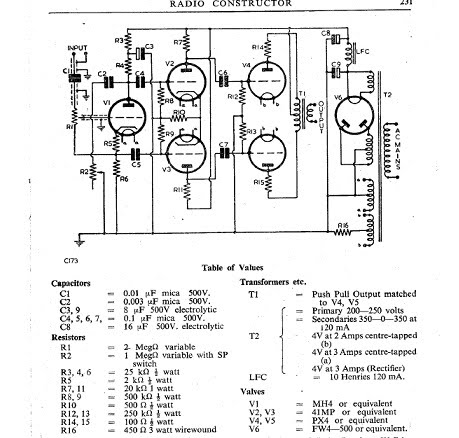

Should I try triodes?The Wireless World design calls for PX4 or PX25 directly heated triodes. These are expensive, but it's not that I can't afford them, just that I'm a bit mean and like to get good value for money. Can directly heated triodes be good value? Oh, it's worth noting that although Wireless World published Williamson's design for a push-pull amplifier with negative feedback around the entire amplifier in 1947, some enthusiasts were still building the Wireless World Quality Amplifier in the 1950s - though perhaps they didn't know it. Here's an example from 1951 - 
What about the KT44? Leak and Williamson used KT66 strapped as triodes to get PX25 like performance. Most likely the same can be done to good effect with KT44 too. The downside of this is that triodes are less efficient than tetrodes and tetrodes strapped as triodes are even less efficient than directly heated triodes. I plan to at least try these valves in some form of KT44 push-pull amplifier. Testing on the AVO valve characteristic meter shows that the characteristics of the KT44 are the same as the KT66. The maximum anode dissipation for these valves (and the very similar 807 and 6L6) is 25W, the same as for the PX25 triode. The photo shows three examples. On the left is a wartime valve marked VT75A, the internal construction seems identical to a KT66 of the same period. The valve in the centre is an STC 11E3 with a construction that looks like an 807. The valve on the right is one of four unmarked NOS valves I bought for this project. Or stick with Mazda Pen45?  The KT61 was used in the Leak TL/10 amplifier, a lower cost development of the TL/12. The TL/12 amplifier used KT66 beam tetrodes strapped as triodes, but significantly the TL/10 used KT61 beam tetrodes in the ultra-linear configuration for greater efficiency. Amongst audiophiles it seems the KT61 is now regarded as a scarce valve, though it was probably quite common in the late 1940s. KT61 were used in single-ended output stages of domestic receivers and in test equipment such as the Marconi Beat Frequency Oscillator, I even have a Sound Sales Schools Receiver with push-pull KT61 output.
It's probably also worth mentioning the 6CH6 (EL821) miniature (B9A base) video beam tetrode. This valve has very similar electrical characteristics to the KT61, and with a suitable adaptor can replace KT61 valves in audio amplifiers. The 6CH6 would be a good choice for a low cost, and much smaller, push-pull quality amplifier. The 1955 STC datasheets for the 6CH6 with data for audio use can be downloaded at Retrovox. Don't be put off by the mention of (or value of) total harmonic distortion. The figures given are quite typical for high gain output valves, KT61, EL33, 6P25 have much the same performance, as do the later EL84 and EL34. You'd need to select a valve with much lower gain, e.g. American types such as 6V6 or 6L6 to get much lower inherent THD, but the gain is lower. Leak achieved 0.1% THD through the use of push-pull and lots of negative feedback using KT61, so it's achievable and does create great amplifiers. A bigger PSU
  Though it's great to find a substantial transformer with multiple 4V centre-tapped heater windings I don't yet have a suitable rectifier valve. The right rectifier for this transformer, with its 450-0-450 @ 250mA HT winding would be a U18. So despite having 20 or more 4V rectifiers I shall be needing another. Something that I do have is a substantial steel chassis, again from the 1940s, that was probably a power supply for a cinema amplifier. The transformer is slightly bigger than the Elstone with 5V and 6.3V heater windings, so I'll remove it, replace with the Elstone and hopefully the chokes and TCC paper-in-oil capacitors are still good for a couple more decades. I've obtained a suitable rectifier, shown far right is a CV1264 (FW4-500) which has a 250mA rating at 500V - it's next to a Mazda MU14.
Other phase-splittersMy first pair of Quality Amplifiers don't have phase splitters, instead they take a balanced input. Phase splitting is done in the pre-amplifier using a triode strapped EF37A for each channel. I have contemplated modifying the circuit to allow the pair of ML4 triodes that serve as drivers for the output valves to also serve as phase-splitters. I should certainly try this out, but I could try other valves in this role, perhaps pentodes.
SP41 and ACSP3As I noted in my blog back in 2008 there are no more cheap triodes, at least not good vintage triodes. For now though there is a good supply of high quality "straight pentodes" (that's what the SP generally means in their names). These valves make excellent small signal triodes.
Buying components
Ebay is a good place to find vintage components, but there are specialist dealers who can sometimes provide better components at lower prices. See the Radiocraft listings for contact info.
See also http://www.tubesworld.com/
|
|
|
{kind=link}